也紀念我們永遠的朋友 李士傑先生（Shih-Chieh Ilya Li）。
用自由軟體 Scribus 來輸出文件（1）-基本操作
Scribus 是一套開源的桌上出版軟體（Desktop Publish Software）。從 2001 年開始開發，支援 CMYK、分隔線、ICC 色彩管理等專業出版功能，並且也能將檔案輸出成 PDF 格式。可與排版軟體的老大哥 Adobe InDesign、QuarkXPress 媲美。
在這裡要特別說明的是，桌上出版軟體與文書處理軟體的定位有很大的不同。桌上出版軟體著重在版面的排列，你可以很自由的決定文字、圖片放在頁面的何處。而文書處理軟體的強項則是在於文字排序、索引方面的處理。
軟體名稱：Scribus
最新版本：1.3.3.14
軟體授權：GNU General Public License Version 2 (GPL2) or any later version
系 統支援：Debian and Ubuntu；Windows 2000/XP/Vista/7；Mac OS X；OS/2 and eComStation；OpenSUSE and SUSE Linux Enterprise；Red Hat/Fedora；CentOS；Mandriva
官方網站：https://www.scribus.net/
下載網址：https://sourceforge.net/projects/scribus/files/
**以下操作使用 Ubuntu 10.04 版為範例，其他作業系統下的操作大致相同。
本文將介紹 Scribus 的基本功能，如何建立新文件，插入文字、匯入圖片，以及加上簡單的美工設計。
Scribus 版本則為 Ubuntu Software Center 下載的 Scribus Stable，版本號為 1.3.3.13。
建立新文件
以下範例要建立兩頁A4 大小的宣傳文件。
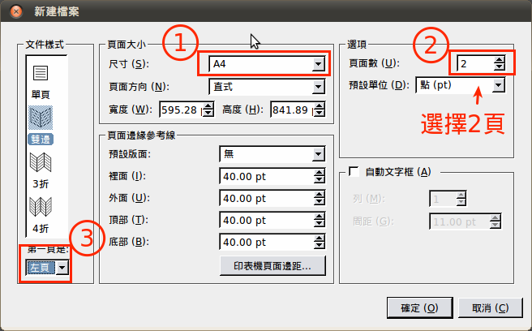
▲ 圖1
1. 選擇頁面大小，在這邊我們選擇尺寸為 A4。
2. 頁數選擇 2。
3. 選擇左頁還是右頁是第一頁，這邊我們選擇左頁。
如果發現頁面太小，可以在功能表【頁面】->【管理頁面屬性】，〔頁面尺寸〕中做更改。假如要插入新的頁面，也是在功能表中【頁面】，選擇【插入】。
建立文字框
1. 選擇〔新增文字框〕。
2. 用滑鼠拉出你要的文字框大小。
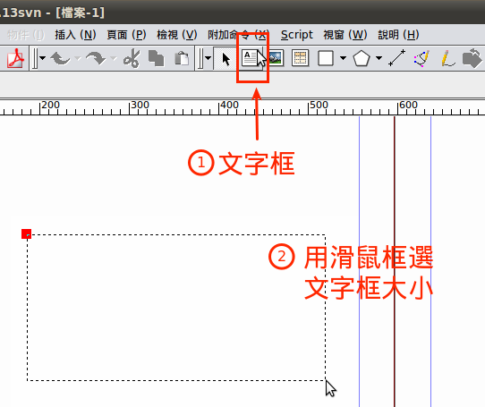
▲ 圖2
接下來要使用故事編輯器，故事編輯器是 Scribus 內建的文字編輯器。在桌上出版的領域，文字通常使用文書處理器處理過後，才匯入桌上出版軟體做後續的編排。但假如只是簡單的文字編輯，其實內建的故事編輯器就能勝任。
1. 點選工具列上的〔故事編輯器〕。
2. 打開故事編輯器後，先別急著輸入中文。
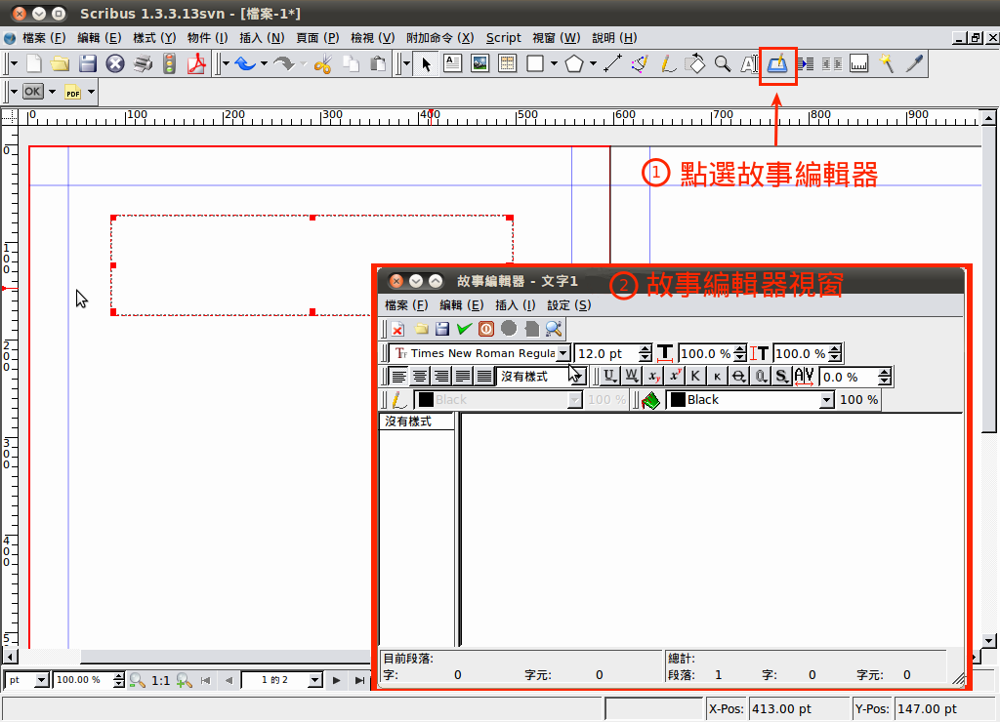
▲ 圖3
1. 對著左邊的欄位按滑鼠，選擇【編輯樣式】。
2. 選擇〔新建〕。
▲ 圖4
**由於 Scribus 處理中文能力不大好，很容易一不小心就當掉。建議不要直接在 Scribus 中打中文字. 建議先在其他的文書處理器如 gedit 上打上中文，再貼到 Scribus的〔故事編輯器〕裡。
選擇中文字型，請依據自己電腦系統中安裝的字型選擇，範例中使用 WenQuanYi Micro Hei（文泉驛微米黑）。要顯示中文字一定要選中文字型，才會正常顯示。
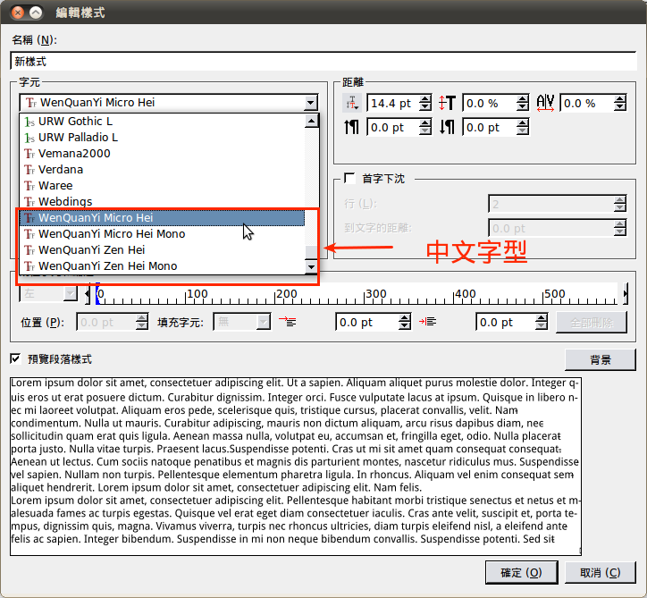
▲ 圖5
選擇字體的顏色。
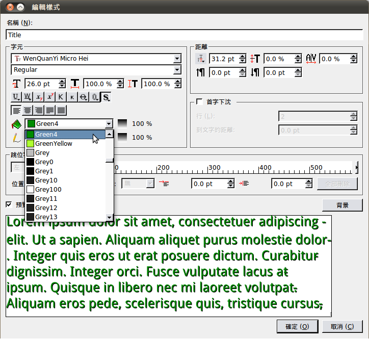
▲ 圖6
1. 選擇陰影效果。
2. 選擇文字排列效果，我們這裡選擇[置中]。
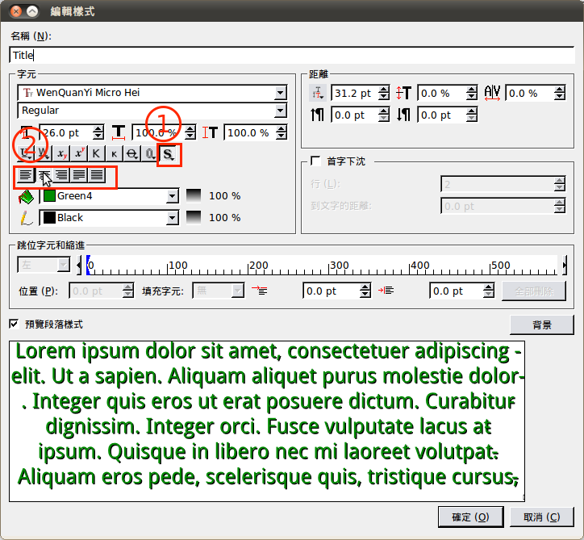
▲ 圖7
按下儲存後即完成樣式的新增。
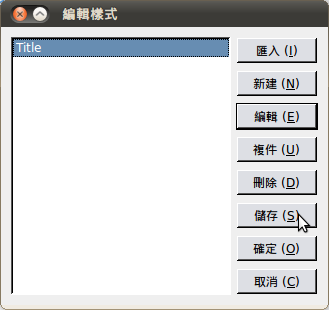
▲ 圖8
1. 選擇各段落要套用的樣式。
2. 按下〔更新文字框並退出〕按鈕，即會儲存變更並退出故事編輯器。
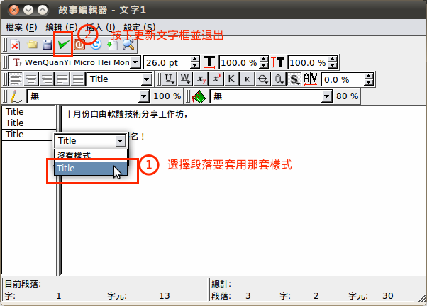
▲ 圖9
從外部文件匯入文字到文字框中
由於 Scribus 是排版軟體，因此我們在這裡匯入已經寫好的稿件，在 Scribus 裡做後續的處理。
在先前的文字框下面新增一個文字框，按下右鍵，【匯入文字】
**在功能表中也能叫出匯入文字的功能，選擇【檔案】->【匯入】->【匯入文字】。
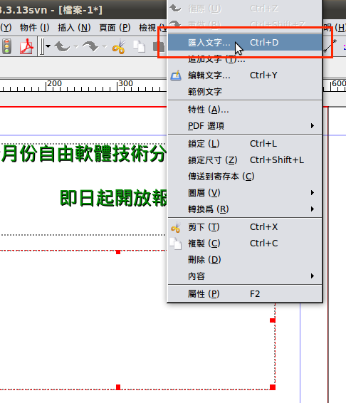
▲ 圖10
選擇要匯入的檔案。
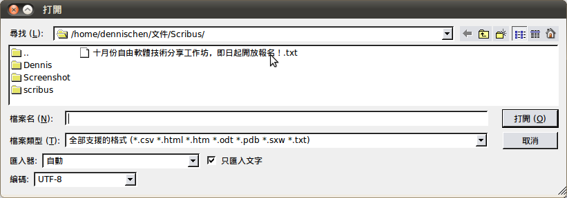
▲ 圖11
由於 Scribus 預設的字型不是中文，因此匯入中文會無法顯示。
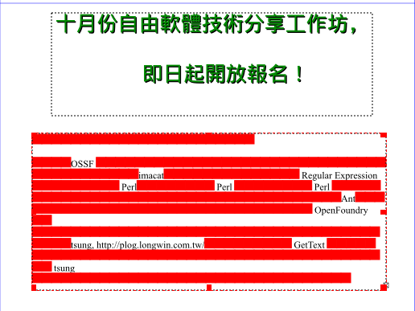
▲ 圖12
依照前面的操作步驟新增樣式，文中新增 Chinese 樣式並套用匯入的文字。
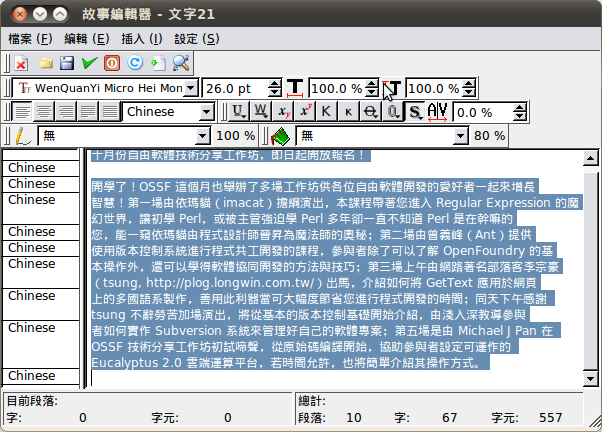
▲ 圖13
退出故事編輯器後，顯示一切正常了。
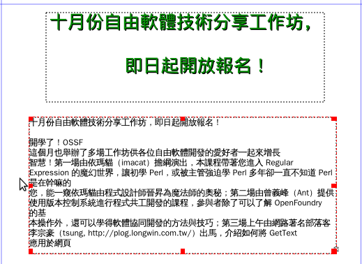
▲ 圖14
新增形狀
一份出版品，不只有文字，還要有圖片以及其他裝飾，才稱得上完整。接下來我們要介紹在文字框下加入色塊。
選擇〔插入形狀〕。
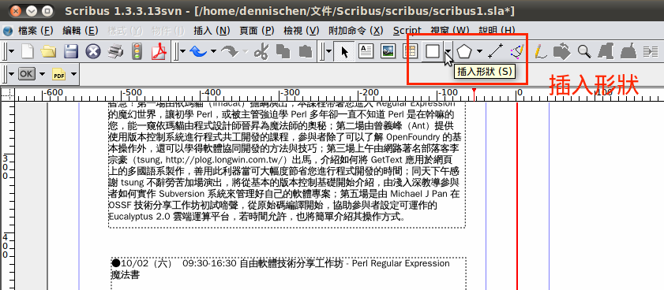
▲ 圖15
插入後是一團黑的長方形，文字都看不到了，別擔心，按滑鼠右鍵【屬性】。
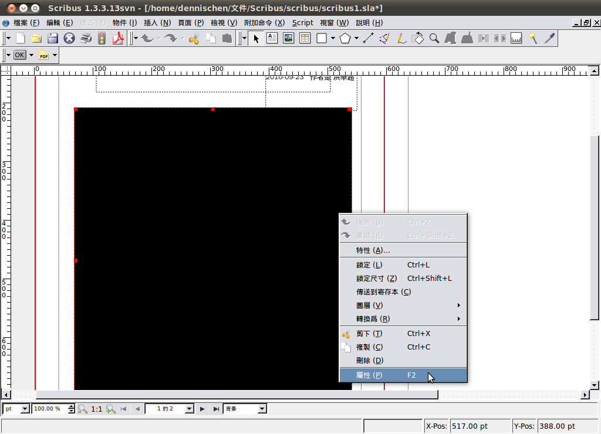
▲ 圖16
{kind=link}
挑選形狀的顏色, 以及所挑選顏色的陰影及透明度，在這裡我們陰影及透明度都設 20% 。
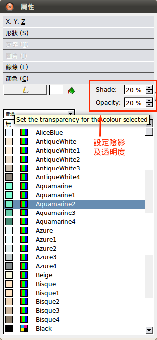
▲ 圖17
挑選自己想要的顏色，調整陰影及透明度後，我們可以看到文字了。
對著我們剛編輯的形狀，按右鍵選擇【圖層】->【降低】。
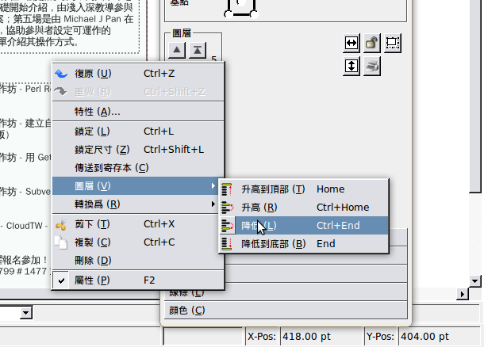
▲ 圖18
這樣一來形狀就在下面，能點到文字框了。如果要對文字框內的文字做變動，就很方便了。
▲ 圖19
完成了簡單的文字編排以及加上形狀！接下來要加些圖案來修飾充滿文字的版面了。
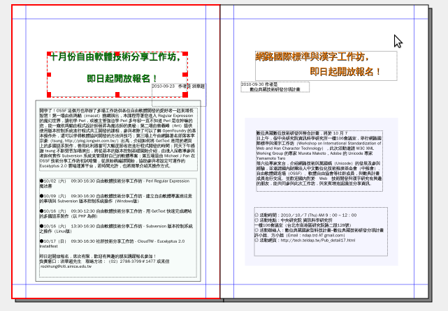
▲ 圖20
匯入圖片
文字稿排好後，美編工作當然也少不了。點選[插入]按下【文字框】，接著拖曳出一個框框，按滑鼠右鍵選擇【匯入影像】。
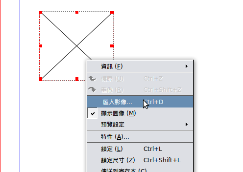
▲ 圖21
{kind=link}
選取你要匯入的圖片。
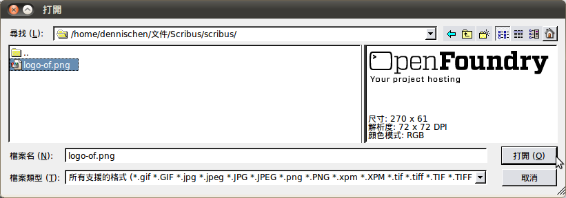
▲ 圖22
{kind=link}
插入之後會發現一個問題，剛剛所畫的框可能太大或太小，這時可選擇[物件]，點選【調整框體適應圖片大小】，這樣就可以完整呈現你要的圖片了。
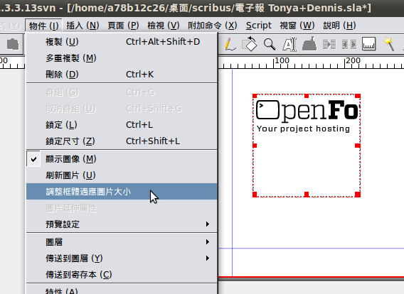
▲ 圖23
一樣按滑鼠右鍵，選擇【圖像效果】，會跳出視窗。這從裡你可以對剛匯入的圖片做出效果，像是將圖片做反轉，原本黑色的字就可以反轉成白色的了。
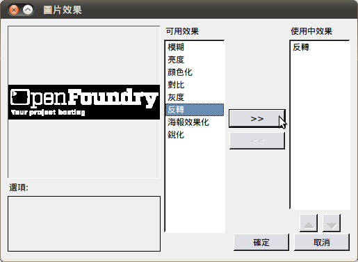
▲ 圖24
圖形編輯
排版時會用到許多色塊，讓版面不再單調，首先先畫出一個長方形。只要選取剛畫的圖形後，點選[視窗]找到【屬性】後按下去，會跳出一個視窗，很多有關於圖形的顏色、位置、形狀就可以在這邊做變化。
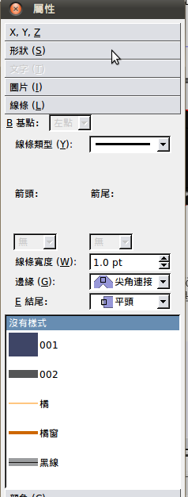
▲ 圖25
在「屬性」這個視窗裏，點選【形狀】->【編輯形狀】，所有有關於外框形狀的調整都可以在這裡達成，可以盡情發會創意，可以像這樣按下這個按鈕，把圖形壓扁。
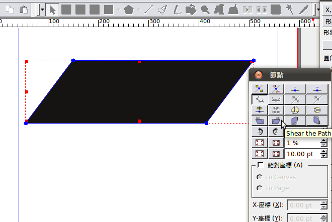
▲ 圖26
在顏色部份還可以做漸層，如下圖，在【普通】底下點選其中一個。
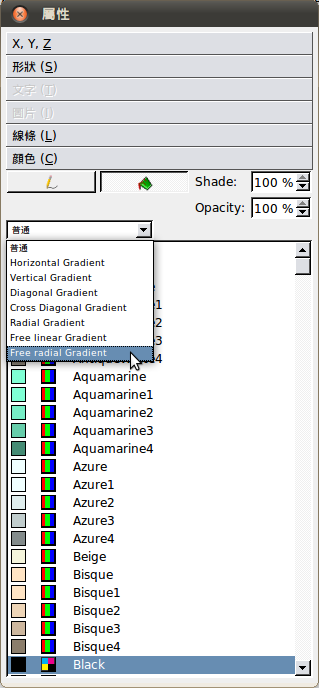
▲ 圖27
點選之後會出現右邊的長條形狀，可以看到長條底下有幾個小三角形，每個小三角形代表著不同的漸層的顏色位置，選取後可以改變那個位置的顏色，將小三角形左右移動可以調整漸層的寬度做出不同漸層變化。還可以自己增加小三角形，做出多種顏色的漸層效果。

▲ 圖28
將先前匯入的圖片跟剛做好的圖形疊在一起就完成了。
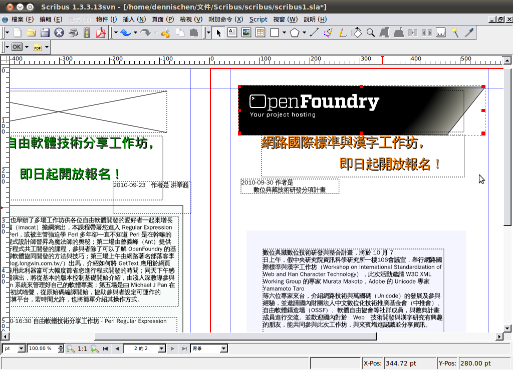
▲ 圖29
要製作出對稱圖形只需要選擇【屬性】->【X，Y，Z】，有個按鈕雙箭頭的按鈕，就可以調整上下翻轉或是水平翻轉的效果。
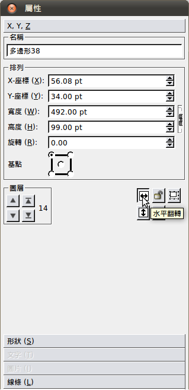
▲ 圖30
只要善用圖形跟文字自己就可以做出不錯的文件排版了！
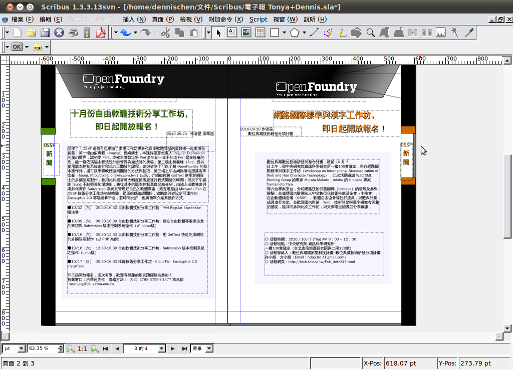
▲ 圖31
**在使用的時候請切記一定要隨時存檔喔！不然辛苦做好的心血很容易就會泡湯，因為通常排版軟體佔太多的系統資源，常常會有軟體當掉的風險，因此養成隨時儲存的好習慣是不可少的。
You may be interested in the following articles:
- 用自由軟體 Scribus 來輸出文件（5）- 文字應用 - 2011-02-21
- 用自由軟體 Scribus 來輸出文件（4）- 製作模板並轉為 PDF 輸出 - 2011-01-05
- 用自由軟體 Scribus 來輸出文件（3）-製作活動海報及手冊 - 2010-12-13
- 用自由軟體 Scribus 來輸出文件（2）-製作大富翁棋盤 - 2010-11-04
Special


Address：No.128, Sec.2, Academia Rd., Institute of Information Science, Academia Sinica, Nangang District, Taipei City 11529, Taiwan (R.O.C).
Privacy Policy. Terms-of-use

Comments
我安裝好了scribus後，要 輸入中文都不行，也在scrib us找不到有中文字型，可否幫我 忙，一個步驟一個步驟教教我
感恩！
email willion.ko
由於Scribus的中文字型是 用英文檔名顯示，所以不會顯示「 標楷體」而是"kaiu"。以下是常用的中文字型英文名字 對照表：
常用字體中英文名字對照
kaiu.ttf 標楷體
mingliu.ttc 細明體 & 新細明體 & 細明體_HKSCS
msjh.ttf 微軟正黑
msyh.ttf 微軟雅黑
至於中文輸入，記得要先在別的文 書處理程式打好，再貼上文字框中 。做用故事編輯器，並且選擇中文 字型。文章中前半段有詳述，可以 再回頭看看。
另外我已下載GIMP但是點選編 輯圖片都會顯示"GIMP遺失"
請幫助我!
終於解決中文輸入的問題，
感謝你們 :)
謝謝四樓的鼓勵，我們會繼續加油 的
我想問的是, 我用1.4.4版本, 照你教學, 使用故事編輯器, 但, 沒辦法新增樣式, 他只會跳出兩個選項, 一是沒有樣式, 另一個是default paragraph style
請問要在那邊新增樣式呢?
邊輯樣式請按F3,不過每次新開一個檔案就要再重 新編輯一次,這點我也很困擾,有 沒有儲存範本的方法阿??